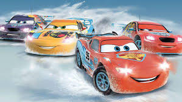
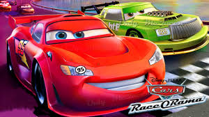

Titulo de la Imagen 1
Cars 2 es una película animada por ordenador producida por Walt Disney Pictures y Pixar Animation Studios siendo la secuela de la película de 2006 Cars esta vez protagonizada por Mate. Fue estrenada en los cines el 24 de junio de 2011.

Titulo de la Imagen 2
Cars 2 es una película animada por ordenador producida por Walt Disney Pictures y Pixar Animation Studios siendo la secuela de la película de 2006 Cars esta vez protagonizada por Mate. Fue estrenada en los cines el 24 de junio de 2011.
Titulo de la Imagen 3
Cars 2 es una película animada por ordenador producida por Walt Disney Pictures y Pixar Animation Studios siendo la secuela de la película de 2006 Cars esta vez protagonizada por Mate. Fue estrenada en los cines el 24 de junio de 2011.